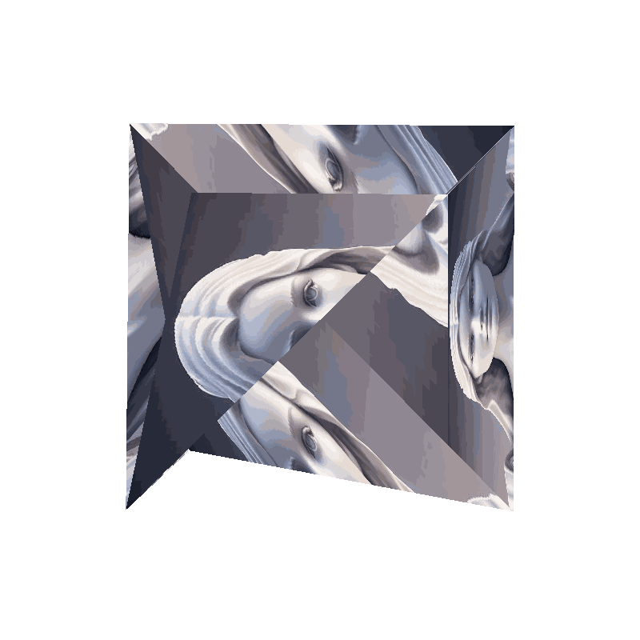

I am a Masters in Computer Vision (MSCV) student at the Robotics Institute, advised by Prof. Shubham Tulsiani.
At Carnegie Mellon University School of Computer Science, I worked with Prof. Min Xu and Dr. Ali Dabouei as a Research Assistant. Before joining CMU, I received a bachelor's degree in Computer Science. Then I worked as a Research Engineer at National Center for AI, advised by Raied Aljadaany.
I'm passionate about computer vision, with a focus on 3D reconstruction, optimization, and computational geometry. My research aims to push the boundaries of what's possible in these areas and contribute to the advancement of computer vision technologies.
Let me tell you a bit more about my skills and what I'm passionate about:
These skills and interests not only drive my academic and professional pursuits but also add a rich dimension to my personal life. I'm always open to new challenges and opportunities to learn and grow.